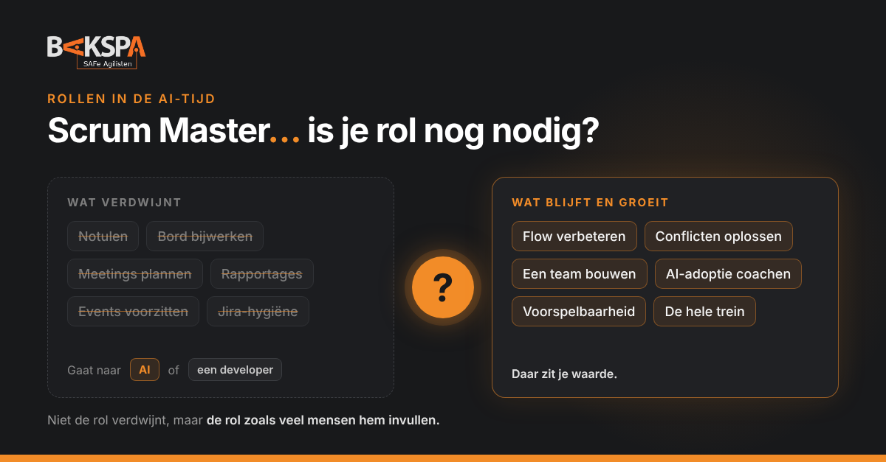

Blog · Rollen in de AI-tijd
Scrum Master… is je rol nog nodig?

Het is de vraag die ik in elke Scrum Master-training wel een keer hoor, soms hardop, soms tussen de regels door: is mijn rol nog nodig? Bedrijven maken de Scrum Master een bijtaak voor een developer, AI neemt steeds meer werk over, en op LinkedIn verschijnt elke week een nieuwe "de Scrum Master is dood"-post.
Mijn eerlijke antwoord: het hangt ervan af wat je doet. De rol zoals hij bedoeld is, is harder nodig dan ooit. De rol zoals veel mensen hem invullen, niet.
Waarom de vraag nu zo hard klinkt
Er komen drie dingen tegelijk samen.
- Kosten. Een dedicated Scrum Master per team is een flinke post. Volgens Echometer, een leverancier van tools voor Agile teams, willen veel bedrijven sinds de gestegen rente niet meer betalen voor een Scrum Master die vooral teamcoach of "feel-good-manager" is geworden. De rol wordt dan een bijtaak: een developer die het erbij doet.
- AI. Notulen, samenvattingen, het bord bijwerken, voortgang verzamelen: AI doet het steeds beter. Op Scrum.org voorspelt trainer Mehdi Hoseini dat AI de Scrum Master harder raakt dan de andere rollen, met meer teams per Scrum Master en mogelijk het einde van de rol in zijn klassieke vorm.
- Druk om waarde te laten zien. Organisaties kijken kritischer naar wat Agile oplevert. Een rol waarvan de bijdrage niet zichtbaar is, staat dan als eerste ter discussie.
Wat verdwijnt
Laten we eerlijk zijn over wat er onder druk staat. Als je week vooral bestaat uit de volgende taken, dan is je rol inderdaad kwetsbaar:
- meetings inplannen en voorzitten;
- notulen en actielijsten bijhouden;
- het bord en Jira op orde houden;
- voortgang verzamelen en rapporteren.
Niet omdat dat werk onbelangrijk is, maar omdat AI het steeds beter kan, of omdat een developer het er met AI-hulp bij kan doen. Wie zijn rol daarop heeft gebouwd, maakt het een organisatie makkelijk om te zeggen: dat hebben we niet meer apart nodig.
Wat blijft, en groeit
In de AI-Empowered SAFe® (Advanced) Scrum Master-training is het fundament van de rol het faciliteren van PI Planning en het ondersteunen van de iteraties. Daarboven liggen drie gebieden waar de echte meerwaarde zit:
- Flow verbeteren: knelpunten in het werk zichtbaar maken en wegnemen, zodat het team voorspelbaar levert.
- Een high-performing team bouwen: vertrouwen, conflicten durven aangaan, eigenaarschap en een team dat zelf verbetert.
- De prestaties van de trein verbeteren: verder kijken dan je eigen team, afhankelijkheden oppakken en samen met de RTE de trein laten rijden.
Daar komt een vierde bij die nieuw is: AI-adoptie in het team coachen. Welke tools gebruiken we, waarvoor wel en waarvoor niet, en wie controleert de output? Scrum.org benadrukt dat de keuze voor AI-tools een beslissing van het team is, en dat de Scrum Master die beslissing faciliteert. Dat vraagt iemand die zelf voorop loopt met AI, en tegelijk bewaakt dat sneller niet slordiger wordt.
Geen van deze dingen kan AI van je overnemen. En geen van deze dingen doet een developer er even bij.
Zelftest: zou je team je missen?
Beantwoord de vragen eerlijk, met ja of nee.
- Als je twee weken weg bent, merkt het team dat aan meer dan alleen een gemiste retro.
- Je kunt de flow-cijfers van je team uitleggen, en weet waar het werk vastloopt.
- Je hebt het afgelopen kwartaal een impediment opgelost dat buiten het team lag.
- Je hebt een lastig gesprek in het team op gang gebracht dat anders niet was gevoerd.
- Je gebruikt AI zelf dagelijks, en hebt het team geholpen er afspraken over te maken.
- Je weet hoe je team bijdraagt aan de PI-doelen en de voorspelbaarheid van de trein.
- Je PO en RTE zouden zonder aarzelen kunnen zeggen wat jij het afgelopen kwartaal hebt verbeterd.
Vijf keer of vaker ja? Dan ben je niet vervangbaar, maar moet je misschien wel beter laten zien wat je doet. Drie of vier? Je zit op de grens; kies bewust waar je in groeit. Minder dan drie? Dan is de vraag in de titel terecht, en is het tijd om je rol opnieuw uit te vinden voordat iemand anders dat voor je doet.
Vier dingen die je nu kunt doen
1. Maak je impact zichtbaar
Niemand ziet een obstakel dat er niet meer is. Houd bij wat je verbetert, en laat het zien in cijfers die je PO, RTE en Business Owners begrijpen: doorlooptijd, voorspelbaarheid, minder werk dat halverwege blijft hangen.
2. Word de AI-voorloper van je team
Niet de Scrum Master die AI vreest, maar die het team helpt het goed te gebruiken. Laat AI je eigen coördinatiewerk doen, en besteed de tijd die vrijkomt aan het werk dat ertoe doet.
3. Neem het WANNEER erbij
Veel organisaties zoeken iemand die zich eigenaar voelt van flow en voorspelbaarheid. Dat past precies bij de rol, en het is ook waarom de vraag naar Delivery Leads groeit. Daarover schreef ik eerder: Van Scrum Master naar Delivery Lead.
4. Kijk verder dan je team
De Scrum Master die alleen naar zijn eigen team kijkt, is het makkelijkst te missen. Draai mee in de Coach Sync, help bij afhankelijkheden, en denk mee over de trein. Daar ligt ook de natuurlijke volgende stap: Advanced Scrum Master, Delivery Lead of RTE.
En voor organisaties
Een Scrum Master als bijtaak lijkt een besparing. Maar de taken die blijven liggen, zie je niet direct: flow die langzaam verslechtert, afhankelijkheden die te laat op tafel komen, een team dat stopt met verbeteren. Wat je bespaart op de rol, betaal je vaak terug in voorspelbaarheid. Stel dus niet de vraag "hebben we een Scrum Master nodig?", maar "wie is hier eigenaar van flow, teamontwikkeling en verbetering?" Als het antwoord "niemand" is, heb je je antwoord.
Dus: is je rol nog nodig?
De Scrum Master die meetings plant en het bord bijhoudt: steeds minder. De Scrum Master die flow verbetert, een team bouwt, AI goed laat landen en verder kijkt dan zijn eigen team: meer dan ooit. Het verschil zit niet in de titel, maar in wat je ermee doet.
Welke vraag uit de zelftest vond jij het lastigst?
Bronnen
- Echometer – Obsolete? Do we really need a Scrum Master?
- Echometer – The most important Agile delivery roles
- Scrum.org – AI Future Impact On The Scrum Roles (Mehdi Hoseini)
- Scrum.org – 10 Scrum Master Interview Questions for the AI Era
- Scaled Agile, Inc. – AI-Empowered SAFe® (Advanced) Scrum Master (cursusmateriaal)
Lees ook: Van Scrum Master naar Delivery Lead · Wie doet wat? PM, PO, RTE en SM in één RACI